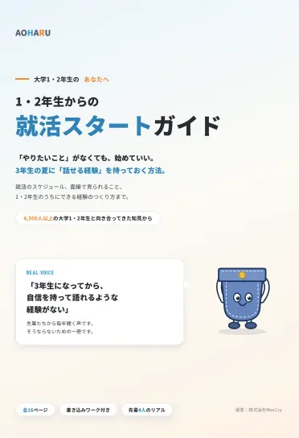

1・2年生からの就活スタートガイド

LINEで無料で受け取る友だち追加後、すぐにトークに届きます登録は30秒。いつでもブロックできます。
3年生の夏までのスケジュールをデータで。
面接で見られる3つの条件と、5つの選択肢。
タップで答えるだけ。A〜Dで自分の一歩が出ます。
不安だったこと、変わったこと、合わなかったこと。
やりたいことの種を、自分の言葉で見つける。
「不安は、行動でしか解決できない」
大学2年生・営業（部活と両立）「『合わない』と分かったのが、いちばんの収穫」
大学3年生・不動産営業4,500人以上の大学1・2年生と向き合ってきたAOHARUがまとめました。
LINEアプリが開きます。
ガイドをあなたのトークに届けるための確認です。
許可する を押してください。
トークにガイドのリンクがすぐ届きます。
無料です。ガイドを読むだけでもOKです。
大丈夫です。「まだ何も決まっていない」人のためのガイドです。
届くのは就活やインターンのお役立ち情報です。いつでもブロックできます。